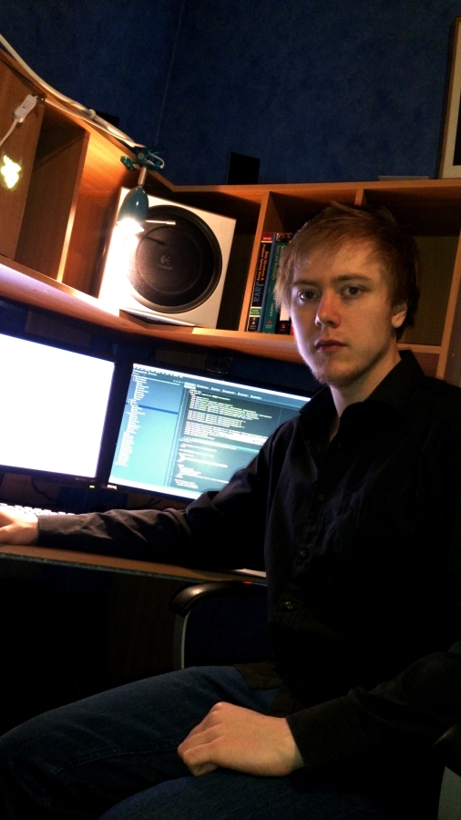

Welcome!
My name is Dan Andersson and I am 24 years old.
I am currently living in Helsingborg (Skane, Sweden) where I am employed at Nowaste Logistics AB.
I finished my studies at the Faculty of Engineering (LTH), Lund University at Campus Helsingborg with a bachelor's degree in computer science.
In short it's a broad education that is mostly centered around the development of software, websites or applications for Android phones.
I spent my last year of my education at a company called Markettime AB, where I have worked with my bachelor's thesis and has been a web developer for a service that the company offers, Markettools,
which is developed in ASP.net (C #, JavaScript, CSS, PHP, SQL) and I thought it was very interesting to see how that worked.
In my spare time I go to the gym, go swimming and meet friends depending on how much time I have to spare. Last year I was also the IT manager for HelsingborgsSpexet, which is a non-profit organization based around students at Campus Helsingborg.
Information about that can be found at: Helsingborgsspexet.se (Swedish)
As an IT manager, I look after the website, is in charge of communication (email to both students, partners and social media) and is on the board.
My current goal is to make my mark in the industry and being able to make a living out of something I really enjoy doing - programming and working in a team.
As a long term goal I would really want to become some kind of a project manager because it's something that I really enjoyed doing and had good results with during my education in projects in the school and on companies.
For more information about my past and current projects you can click the "My Projects" tab at the top of this webpage.
